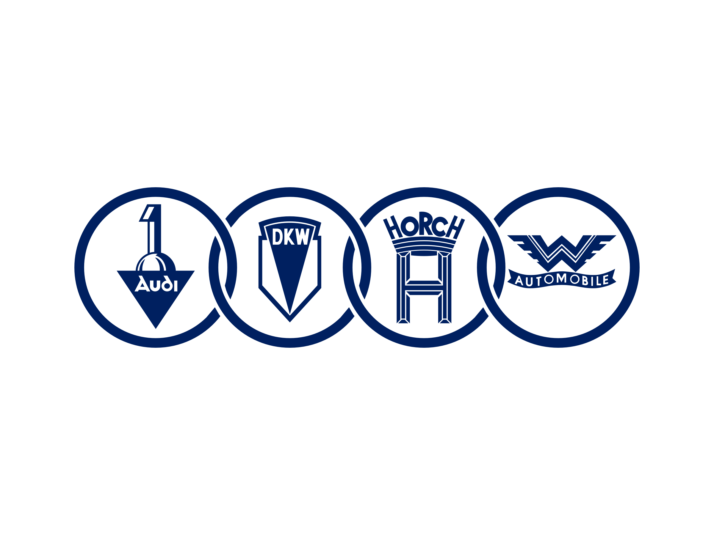

Wat waren de vroege ontwikkelingen en uitvindingen die hebben geleid tot de creatie van de tweetaktmotor?
De ontwikkeling van de verbrandingsmotor vormde een cruciale eerste stap. In 1858 ontwierp de Belgische ingenieur Etienne Lenoir de eerste commercieel succesvolle inwendige verbrandingsmotor die op gas werkte. Dit was nog geen tweetakt motor maar legde wel de basis voor andere uitvinding rondom verbrandingsmotoren.
De werking van een tweetaktmotor oftewel de tweetaktcyclus werd voor het eerst beschreven door de Franse ingenieur Alfred Angot in 1889. Hij realiseerde zich dat een motor in staat zou zijn om zowel de compressie- als de arbeidsslag in slechts één rotatie van de krukas te voltooien, wat de efficiëntie aanzienlijk kon verbeteren.
Karl Benz, een Duitse ingenieur, wordt vaak gezien als de grondlegger van de tweetaktmotor, omdat hij in 1879 een motor waarin de verbrandings- en uitlaatslagen werden gecombineerd in één enkele zuigerslag patenteerde. Ondanks dat deze motor nog niet echt efficiënt of betrouwbaar was, was het wel een belangrijke stap in de richting van de tweetakt technologie.
Verdere aanpassingen aan het idee van tweetakt motoren werden aangebracht door Duitse ingenieurs zoals Dugald Clerk en Hugo Güldner. Clerk introduceerde in 1881 een tweetaktmotor met een gescheiden compressie- en arbeidsslag, waardoor de efficiëntie flink toenam.
De tweetaktmotor vond vervolgens zijn weg naar verschillende transportmiddelen, waaronder motorfietsen en kleine voertuigen. Een opvallend succesverhaal was de tweetakt motorfiets ontworpen door DKW (Dampf-Kraft-Wagen) in 1929.
DKW "Dampf-Kraft-Wagen
DKW, dat staat voor "Dampf-Kraft-Wagen," was een Duits automerk. Het is opgericht in 1916 in Zschopau in Duitsland. DKW begon als fabrikant van motorfietsen. De naam "Dampf-Kraft-Wagen" betekent in het Duits "Stoomkracht Voertuig" waar het bedrijf eerst mee experimenteerde, toen de projecten met stoom mislukte zijn ze begonnen met tweetaktmotoren en daardoor is het uiteindelijk een bekend bedrijf geworden.
DKW had een belangrijke rol in de ontwikkeling en vooral popularisering van tweetaktmotoren in de jaren 1920 en 1930. De lichte en efficiënte tweetaktmotoren werden gebruikt in veel motorfietsen en auto's. In 1920 begon DKW met de productie van auto's, waarbij de DKW Front uit 1931 opviel, omdat het werelds eerste productieauto met voorwielaandrijving was. DKW’s auto's werden veel gekocht vanwege hun compacte formaat en zuinige tweetaktmotoren.
In 1932 werd DKW onderdeel van Auto Union, samen met Audi, Horch en Wanderer. Het bekende Auto Union-logo met de vier ringen werd het symbool van deze samenwerking. Na de Tweede Wereldoorlog werd DKW in Oost-Duitsland genationaliseerd, terwijl in West-Duitsland Auto Union werd heropgericht. Auto Union ging later op in Audi, waarbij de vier ringen het bekende logo van Audi werden DKW historie - DKW Club Nederland, (2020).
